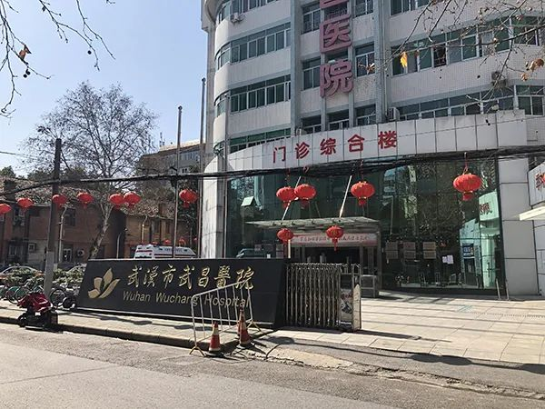
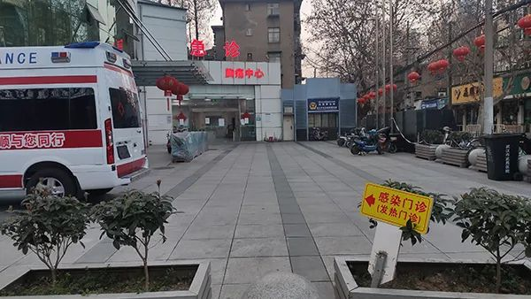

感染新冠肺炎离世院长刘智明：抗疫前线的“工作狂”，同事眼中的“温和”医生
原文链接 备份链接 妻子蔡利萍是武汉市第三医院光谷院区ICU护士长，也一直在一线抗疫。离丈夫所在的医院只有20公里路，夫妻俩却近一个月没见过面，靠电话断断续续联系着。 全文3080字，阅读约需6分钟 ▲武汉武昌医院院长刘智明去世 系第一 …
澎湃新闻记者 汤琪 发自武汉
实习生 胡友美 孟津津 薛晓咚

武昌医院西院区门诊部。澎湃新闻记者 汤琪 图
从武汉市武昌区和平大道通往武昌医院西院区门诊楼的小径，是一条“断头路”，若开车进去，只能调头原路返回。这座医院和周围的几栋居民楼几乎紧挨着，它像一滴水，淹没在附近密集的老旧小区里。
这滴“水”对它所处的武昌杨园地区来说，是“救命的水”。
六年前，武昌医院被核定为三级医院，填补了附近地区公立三级医院的空白。2013年调任武昌医院院长的刘智明，是该院近年来发展的推动者和见证人。

武昌医院指挥部。澎湃新闻记者 汤琪 图
去年12月以来，一场新型冠状病毒感染的肺炎（以下简称“新冠肺炎”）疫情从武汉发起，席卷全国。疫情蔓延之时，平日里就几乎满负荷运转的武昌医院被改造为收治新冠肺炎患者的第二批定点医院。
2020年2月18日10时54分，51岁的刘智明因感染新冠肺炎在武汉同济医院中法新城院区去世。这是疫情发生后，第一位因新冠肺炎牺牲的医院院长。在武昌医院从普通综合性医院改造为定点医院期间，刘智明已经出现低烧症状。但重任当前，他一直坚持在一线指挥，直至改造任务完成。
武昌医院纪委书记2月20日在接受包括澎湃新闻（www.thepaper.cn）在内媒体采访时坦言，武昌医院从“开战”以来就树立了一个目标，要以最低的代价打赢这场“战役”。疫情以来，该院付出了大量的人力、物力，也作出了巨大的牺牲。
这座原本院感专家评估仅可改造出300个左右床位的医院，最终实现504个床位用于收治患者，最多的时候收治床位达到527个。
2月20日，院长刘智明的简介海报还挂在武昌医院外。澎湃新闻记者 郑朝渊 图
带病坚守的院长
多位刘智明的家人和同事如今已经非常明确，早在1月23日武昌医院被改造为收治新冠肺炎患者的第二批定点医院前，这位院长的身体已经处于不适的状态。
与刘智明共事了三年的武昌医院副院长黄国付2月20日在接受澎湃新闻采访时透露，在1月21日之前，武昌医院已经接收到一批新冠肺炎的疑似患者，医院特地把重症监护室（ICU）的床位全部腾出来，作为收治的病区。
按照武昌医院纪委书记洪毅的说法，该医院收治疑似患者的时间或更早。
他告诉澎湃新闻，那时还没有给这个病命名，ICU里隔离起来的疑似患者都是没有做核酸检测的。
“他当时就是一级防护进去的。”据洪毅介绍，作为神经外科专家，刘智明都要深入一线对每个收治在ICU的患者进行探视，并一一掌握他们的病情。但当时，由于整体防控意识薄弱，刘智明在面对这些疑似患者时，仅做了一级防护。
“可能是在那个时候被感染，因为没有做病原学追踪，我们也只能是猜测。”洪毅说。
1月20日，国家卫健委高级别专家组组长、中国工程院院士钟南山在接受央视采访时，首次对外宣布新冠肺炎是肯定的人传人。第二天，武昌医院就接到指令，要求三天内把现有住院的499名其他疾病患者全部转出，确定该院为发热患者定点收治医院。
刘智明的妻子蔡利萍是武汉市第三医院光谷院区重症病区护士长，据她介绍，在1月20日前后，丈夫便开始轻微发热、全身没劲。只不过当时，她并未意识到，出现在丈夫身上的反应就是新冠肺炎的症状。
1月22日上午六七点左右，蔡利萍又接到刘智明打来的电话，说医院很忙，就不回家了，马上要上班。她当时感觉刘智明的呼吸有点急促，告知他不要轻视这个问题。
同一天，洪毅还与刘智明一起在单位食堂吃饭。据洪毅回忆，当时刘智明曾说起自己“角膜有问题，眼部有干眼症”，洪毅还以为他在开玩笑，调侃说“你能吃、能喝、能跑，哪里都不像得病了”。
事实上，刘智明当天已测过两次体温，一次是36.8度，一次是37度。下午，他打电话告诉告诉妻子，自己走路气喘，疑似感染，已经在武昌医院接受治疗。次日，确诊。
1月24日，他因病情加重，被转入武昌医院ICU。

武昌医院西院区外。澎湃新闻记者 郑朝渊 图
重任下的病区改造
明知身体有恙，为何不“退”？
黄国付认为，刘院长在一线的坚守，一部分原因来自于武昌医院从普通综合性医院改造为定点收治新冠肺炎患者医院时所面临的巨大压力。
据湖北日报此前报道，武昌医院原名武昌铁路医院，曾隶属于原铁道部郑州铁路局管理，为广大铁路职工及家属提供医疗服务。2004年，该院交由原武汉市卫生局直属管理，更名为武汉市武昌医院，完成了从企业医院向行业医院的改制，面向社会提供医疗服务。
2014年6月，该院顺利通过原湖北省卫计委组织的专家现场评审，被核定为三级综合医院。2013年调任为武昌医院院长的刘智明，是该院近年来不断发展的推动者和见证人。
上述报道称，武昌医院填补了武汉市武昌杨园地区公立三级医院的空白，该区域此前医疗资源比较匮乏。
武昌医院消化内科主任王珣在刘智明住院后去病房探望过。2月20日，她在接受包括澎湃新闻在内媒体采访时表示，武昌医院所在区域附近确实没有一个比较好的、大型的三甲医院，刘院长和该院党委书记都希望未来能把武昌医院打造成优秀的三甲医院，能更好服务于周围的老百姓。“刘院长为这件事操了很多心”。
更让刘智明操心的是，新冠肺炎疫情不断蔓延，第二批定点医院改造任务落在了包括他在内的武昌医院1000余名职工肩上。
黄国付告诉澎湃新闻，1月21日下午4点，武昌医院接到改造指令，要求下午6点就正式启用发热门诊。“我们下午4点半召开了职能部门的动员会，5点又召开了全院临床一级主任的动员会，会后立即启动改造工作。”医院决定，把西院区过去的日常门诊楼改成发热门诊，1月22日和23日两天，还要进行隔离病房改造。这期间，刘智明一直在一线指挥。
“在这之前，我们没有改造方面的经验，当时也不太清楚会进行什么样的改造。”王珣说，武汉市金银潭医院很早就收治新冠肺炎患者，因为他们是专门的传染病医院，而武昌医院就是普通的综合性医院，要改造为收治呼吸道传染疾病的医院是很大的考验。
据《中国新闻周刊》报道，1月21日下午5时，刘智明曾给武汉市第三人民医院前任院长、老同事金捷打电话告知了这一消息。对于这次改造，金捷有些不确定，因为时间太短了。
当时，武昌医院还有499名其他疾病的住院患者需要转移至结对的医院，有些人还处于病重、病危状态。
上述报道称，转为定点医院之前，武昌医院的物资和设备紧缺，没有专门的员工通道，不具备处理传染病的条件。
“超负荷”的运转
改造成为传染病的定点医院，对院感再造的要求极高。
“我们医院的院感是经过了几轮专家督导的。”黄国付对澎湃新闻介绍，一开始是武汉市的院感专家来指导，第二轮来的是国家卫健委支援的院感专家，第三轮来的是支援该院的空军军医医疗队的一批院感专家。
他透露，根据院感专家的意见，武昌医院可改造收治的床位应在300个左右，但基于患者的需求，基于当时接到的指令，最终完成了504个床位的收治，最多的时候（1月23日）达到527个床位。其中，东院区的一栋准备在今年拆迁的旧楼里都安置了140个床位。
在病房改造的这几天，包括刘智明、黄国付、洪毅在内的院领导都在通宵达旦指挥工作。洪毅告诉澎湃新闻，武昌医院的医护人员、其他在职员工共1034人，其中有三分之二的医护人员投入到了这场“战役”中，基本上把该院的所有人员抽空了。
“不仅仅涉及硬件改造和流程再造的压力，也涉及专技人员不足的压力，正因为是院长，要统筹安排，加上他平时身体好，可能没当回事。”再次忆起刘智明确诊住院前的工作片段，黄国付至今从情感上不愿相信斯人已去的事实。
洪毅坦言，武昌医院从“开战”以来，就树立了一个目标，要以最低的代价打赢这场“战役”。新冠肺炎疫情以来，武昌医院付出了大量的人力、物力，也作出了巨大的牺牲。
2月14日，刘智明从武昌医院转入同济医院中法新城院区后，开始接受插管治疗，最终于四天后宣告抢救无效离世。
洪毅透露，目前，武昌医院共有26位医护人员被感染新冠肺炎，但相对于其他有的医院来说，感染率是较低的，没有出现明显的聚集性医护人员感染。
目前，其余被感染的医护人员状态稳定，正在接受“一人一方案”的治疗。“我们会尽全力做好医护人员的防护装备供给、营养保障、轮休制度及工伤待遇。”黄国付说。
武昌医院一栋新修的大楼已经在东院区落成封顶，这只是该院扩建的一期工程，未来还会有二期、三期，肉眼可见的发展蓝图原本令全院职工充满寄望。
“我们医院的新楼修好了，但刘院长不在了。”一名武昌医院的护士在微信朋友圈留下了无尽的感慨。
戳这里进入
“全国新型冠状病毒感染病例实时地图”↓↓↓
本期编辑 常琛
推荐阅读


原文链接 备份链接 妻子蔡利萍是武汉市第三医院光谷院区ICU护士长，也一直在一线抗疫。离丈夫所在的医院只有20公里路，夫妻俩却近一个月没见过面，靠电话断断续续联系着。 全文3080字，阅读约需6分钟 ▲武汉武昌医院院长刘智明去世 系第一 …
原文链接 备份链接 “他是一个英雄” 2月18日上午10点54分，武昌医院院长刘智明因感染新冠肺炎，经抢救无效去世，享年51岁。 “刘院长是一个很负责的人，内心非常强，我们医院的同事都很敬重他。他长得高高大大的，很有才气，结果说没就 …
原文链接 备份链接 澎湃新闻记者 汤琪 廖艳 温潇潇 薛莎莎 实习生 赵雨萌 夏梦洁 接送刘智明遗体的殡仪馆车辆抵达。 澎湃新闻记者 汤琪 图 在殡仪馆的车辆抵达前，不少人保持着沉默，有人时而将口罩取下，擦拭眼泪。 2月18日上午，湖北 …
原文链接 备份链接 【财新网】（记者 高昱 包志明 萧辉）经历了将近一天的抢救后，武汉武昌医院院长刘智明还是在今天（2月18日）上午不幸殉职。武汉市卫健委网站2月18日中午13时发布公告称，武汉市武昌医院党委副书记、院长刘智明同志，在抗 …
原文链接 备份链接 *************▲*************这是2月20日拍摄的悬挂在武汉市武昌医院门口的刘智明院长的照片。（新华社记者 熊琦/图） 全文共3204字，阅读大约需要8分钟。 “刚开始，医院还没有全面提升到二 …